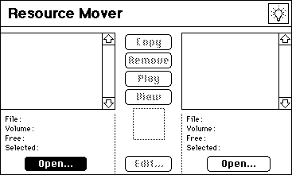
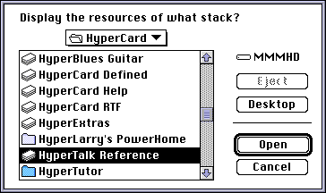
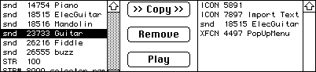

Many of the things that you find in a HyperCard stack are resources. Icons, cursors, pictures, sounds, palettes, external functions and external commands are all examples of resources. The Resource Mover allows you to copy resources between stacks, delete resources from stacks, and change resource names and ID numbers. It also allows you to play "snd" resources and to view ICON, CURS, and PICT resources.

To display the resources in a stack, click one of the Open buttons.

To display the resources in an application, or document, hold down the Option key and click Open.
To copy a resource to a stack, open a file on both sides, select a resource and click Copy.

To change the name or ID number of a resource, select a resource in the list and click Edit.
To remove a resource, select a resource in the list and click Remove. Hold down the Option key and click Remove to avoid the confirmation dialog box.
To view a PICT resource, select a resource in the list and click View. (You can open up to 16 PICT windows at once.)
To play a sound resource, select an "snd " resource and click Play.